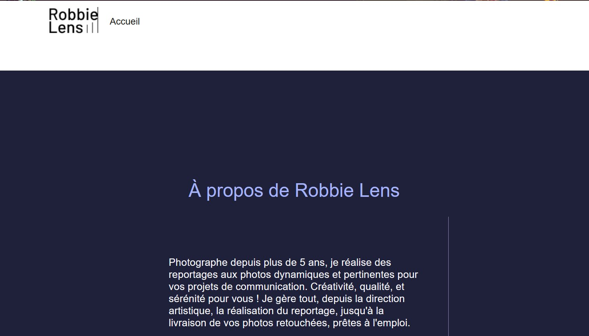
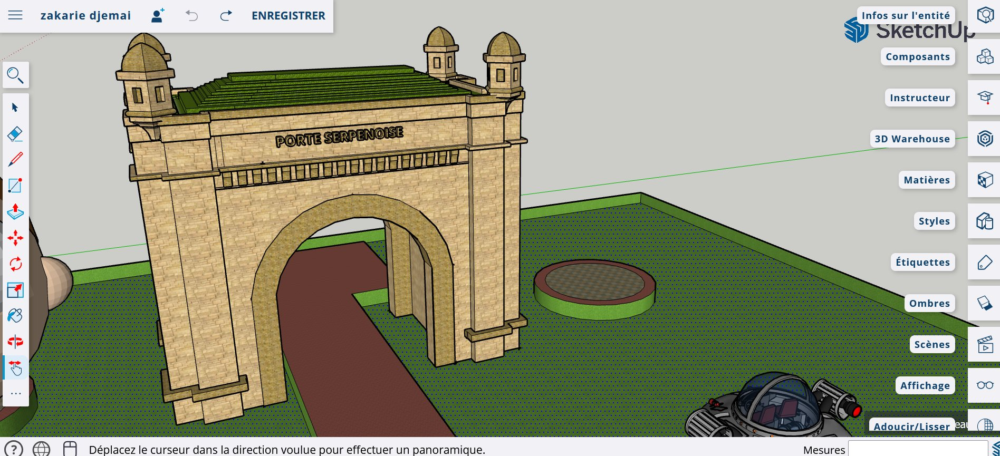

Projet personnel
Portfolio personnel
Site portfolio statique multi-pages — design responsive mobile-first, structure sémantique, accessibilité WCAG (skip-link, aria, contrastes), animations CSS légères.
Projets réalisés en formation, en stage et en autonomie — organisés par technologie.
Projet personnel
Site portfolio statique multi-pages — design responsive mobile-first, structure sémantique, accessibilité WCAG (skip-link, aria, contrastes), animations CSS légères.
TP Formation
Série de composants HTML/CSS réutilisables : header simple, header burger responsive, menus déroulants multi-niveaux. CSS pur, structure modulaire.
TP Formation · HTML/CSS

Site vitrine pour un photographe professionnel — page d'accueil, galerie photos avec hover interactif, page à propos et formulaire de contact. Design sombre et élégant.
TP Formation
Menu mobile avec gestion complète de l'accessibilité : aria-expanded, fermeture au clavier (Escape), focus management. Aucune dépendance externe.
TP Formation
Classe ES6 avec private fields (#) pour générer des sous-menus navigables au clavier. Gestion Escape, focusout, aria-controls, aria-expanded. Multi-niveaux supportés.
TP Formation
Fenêtre modale avec focus trap complet (Tab/Shift+Tab), fermeture Escape et clic extérieur, aria-hidden, aria-modal. Retour du focus sur l'élément déclencheur.
TP Formation
Validation front-end complète avec regex : email, champs requis, correspondance mots de passe, critères en temps réel, messages d'erreur accessibles avec aria-live.
Projet scolaire · Équipe
Application web de recommandation de jeux vidéo «catastrophiquement mauvais». Quiz interactif en JS (5 questions, profil A/B/C), API REST Flask qui analyse les réponses et recommande un jeu depuis une base JSON enrichie via l'API RAWG. Projet d'équipe avec Git structuré (commitlint, husky).
TP Formation
Premiers scripts PHP : traitement de formulaires côté serveur, manipulation de variables, structures conditionnelles et boucles. Intégration dans des pages HTML dynamiques.
TP Formation
Conception d'un schéma de base de données relationnelle, création de tables, clés primaires et étrangères. Requêtes SQL : SELECT, INSERT, UPDATE, DELETE, jointures et filtres.
Stage · Client réel
Conception et mise en ligne d'un site multi-établissements pour un groupe de restaurants messins. Maquettage Figma (desktop + mobile), intégration WordPress thème Blocksy, CSS sur mesure (palette Cappuccino Chic), configuration de 7 plugins (Rank Math SEO, Wordfence, WP Fastest Cache, Contact Form 7, WP Customer Reviews, UpdraftPlus, Smush). Back-office documenté pour prise en main autonome.
TP Formation
Conception complète d'un parcours utilisateur sous Figma — wireframes basse fidélité, maquettes desktop et mobile, prototypage interactif, charte graphique et composants réutilisables.
Stage · Client réel
Maquettes complètes du site Les Bistrots de Metz sous Figma — charte graphique Cappuccino Chic, déclinaison desktop/tablette/mobile, prototypage des parcours utilisateur validé avant intégration WordPress.
TP Formation · 3D

Modélisation 3D de la Porte Serpenoise de Metz sur SketchUp — reconstruction architecturale d'un monument historique avec composants, matières et mise en scène (personnages Rick & Morty, fontaine, véhicules).